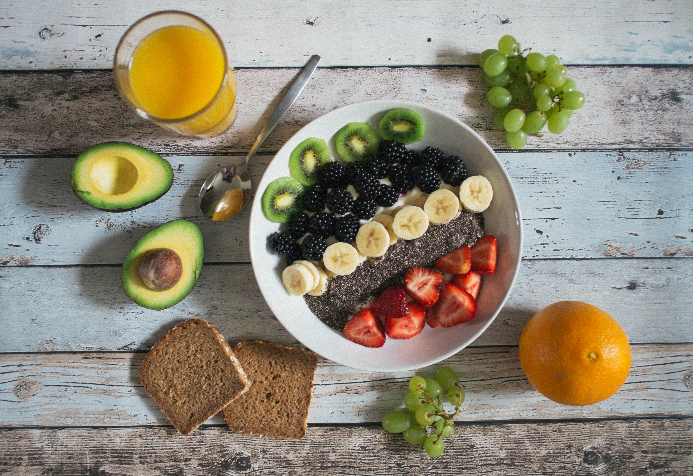

 It's not always easy but it sure can be worth it! (As well as delicous.) Many people say that they do not like certain vegetables or fruits. That is fine, different people have different tastes. But there really is an enormous selection out there to choose from.
It has been said that if you eat a rainbow then you will be doing just fine, or that an apple a day keeps the doctor a way. There are lots of different ways to incorporate veggies and fruits into your diet sometimes you just need to not be afraid to try new things.